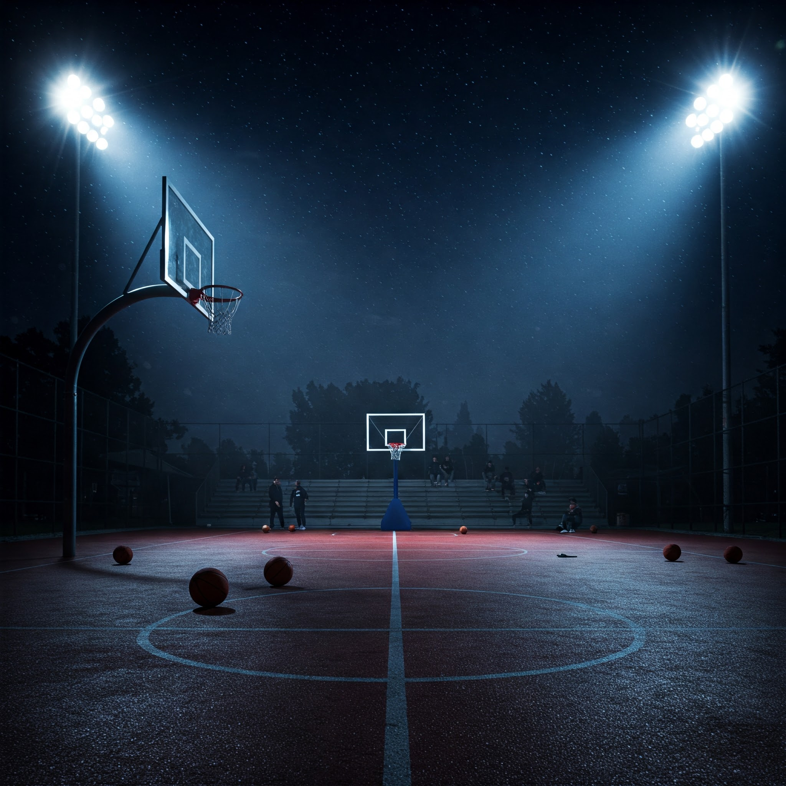
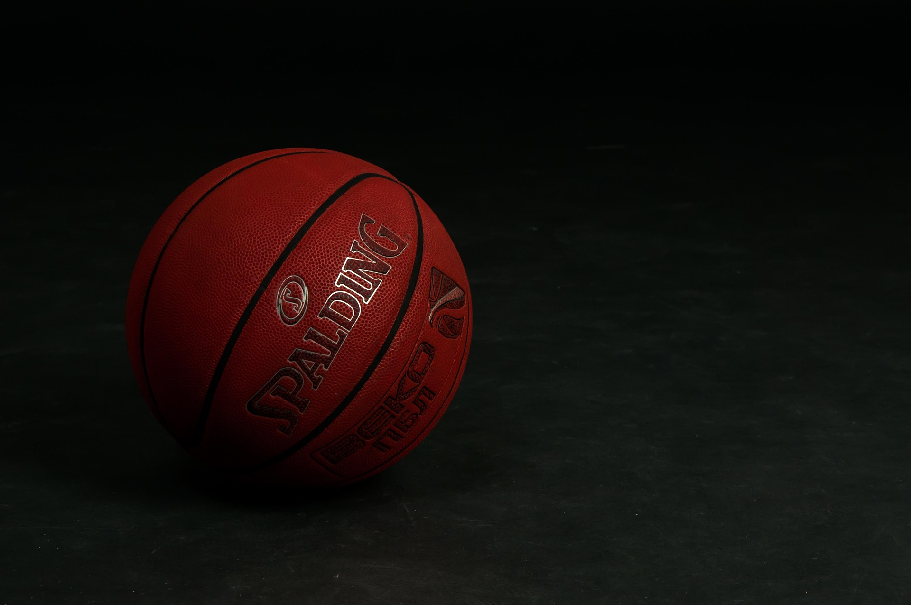
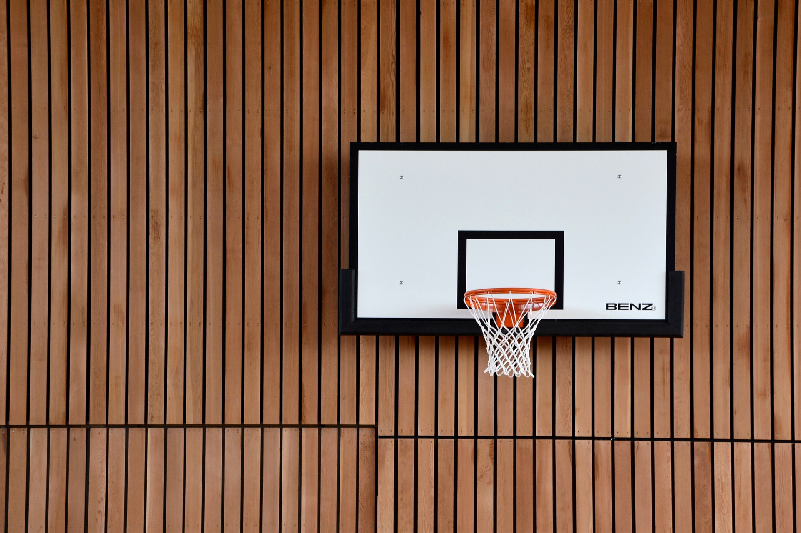
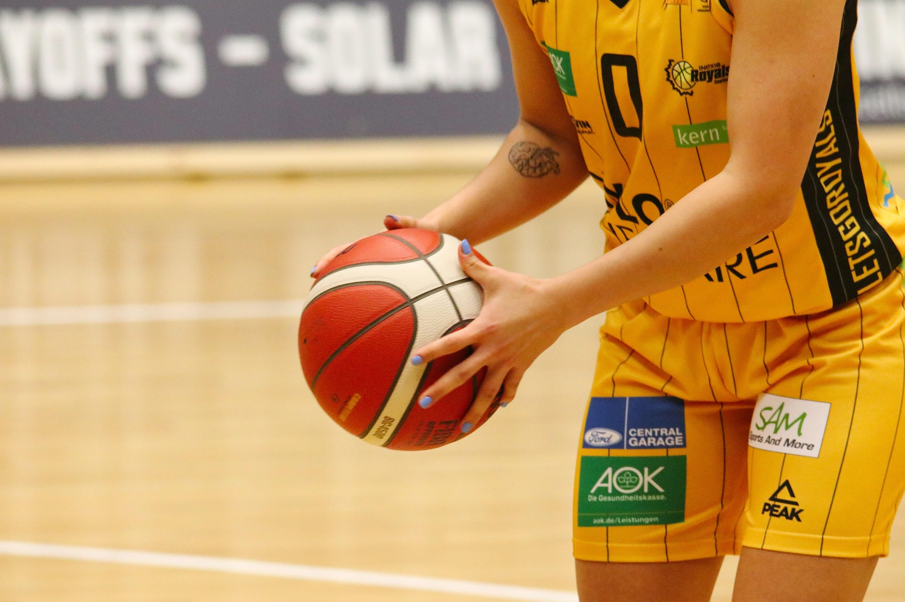
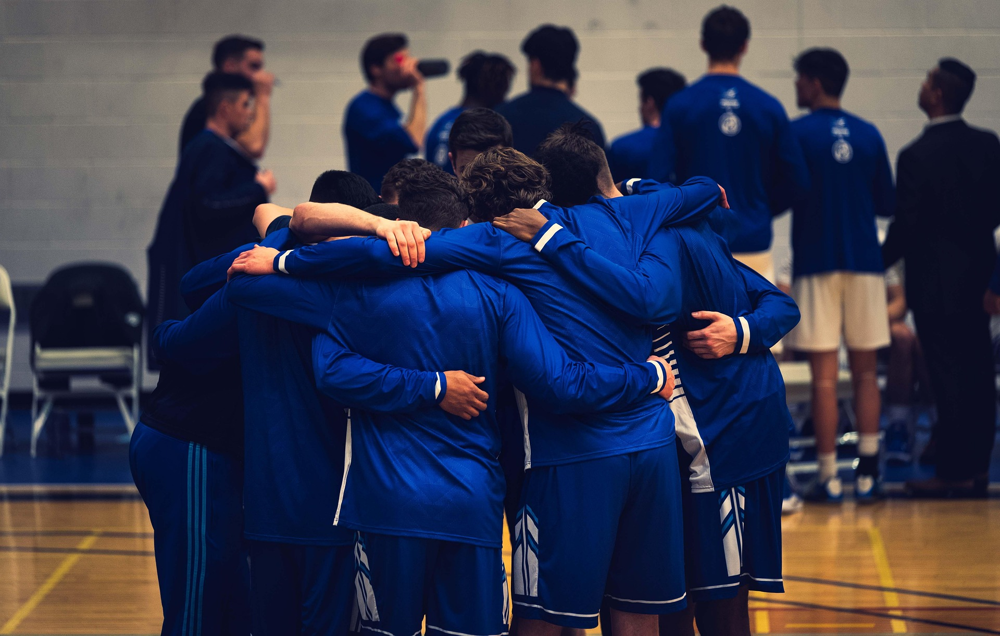

Welcome
My favorite hobby is Basketball! Primarily because of it being my
previous passion
before Cyber Security!

Basketball is my favorite hobby because it’s a perfect mix of skill,
competition, and fun. I love the fast pace of the game, the teamwork
involved, and the thrill of making a great shot or a key pass. Playing
basketball helps me stay active and improve my coordination,
endurance, and reflexes. It also teaches me discipline, strategy, and
the importance of working together with others. Whether I’m shooting
hoops alone or playing in a competitive game, basketball always brings
me joy and a sense of accomplishment.
Beyond the physical benefits, basketball is also a great way to relieve
stress and clear my mind. The intensity of the game allows me to focus
entirely on the moment, pushing aside any worries or distractions. Every
dribble, pass, and shot requires concentration, making it a great escape
from everyday challenges. Plus, the friendships I’ve built through
basketball make it even more special. The camaraderie, friendly
rivalries, and shared love for the sport create lasting memories both on
and off the court. What makes basketball even more exciting is the
continuous opportunity to improve. Whether it’s perfecting my shooting
form, improving my dribbling skills, or learning new strategies, there’s
always something to work on. The game pushes me to challenge myself, set
goals, and stay motivated. Watching professional players and analyzing
their moves inspires me to become better, and practicing consistently
gives me a sense of progress and achievement. Basketball isn’t just a
hobby for me—it’s a passion. It’s a sport that teaches valuable life
lessons like perseverance, hard work, and sportsmanship. Whether I’m
playing in a competitive game, practicing solo, or just shooting around
with friends, basketball always brings me happiness and a deep sense of
fulfillment.
$WhoAmI? (About me)
Hi, I'm Christian Bego, and basketball has been a passion of mine
since I was a kid. The game has always been more than just a sport to
me—it's a perfect mix of strategy, teamwork, and individual skill.
Just like in coding, basketball requires you to think on your feet,
adapt to ever-changing situations, and solve problems quickly. On the
court, every play is like a line of code, where each move and decision
contributes to the bigger picture. Both basketball and coding have
taught me the importance of persistence, attention to detail, and the
drive to always improve. Whether it’s finding the best angle for a
shot or debugging a tricky program, I approach both with the same
focus and determination. The challenge of basketball complements the
logic of coding, making each experience a way for me to grow and push
myself in different yet interconnected ways.

Basketball has played a huge role in shaping who I am today, teaching
me invaluable lessons about overcoming challenges and handling
adversity. Throughout my time playing, I’ve faced countless hardships,
from tough losses to personal setbacks on and off the court. However,
basketball taught me the importance of resilience—learning how to
bounce back from mistakes, stay focused under pressure, and push
through difficult times. The sport showed me that failure isn’t
permanent; it’s an opportunity to learn and improve. Whether it was
working through a tough game where nothing seemed to go right or
dealing with injuries that slowed me down, basketball taught me the
significance of perseverance and the need to stay positive no matter
what. The discipline and mental toughness required in basketball have
translated into many aspects of my life, shaping my approach to
challenges. It’s not just about physical strength; it’s about staying
mentally strong, keeping your head in the game, and never losing sight
of your goals. The lessons I’ve learned on the court—about teamwork,
determination, and resilience—have not only made me a better player
but have shaped my mindset in all areas of life, pushing me to
overcome obstacles and continue striving for personal growth.
When Did I Discover This Joy?

I started playing basketball when I was just 3 years old, with a tiny
hoop and a big dream of one day making it to the big leagues. What began
as a fun way to pass the time quickly turned into a true passion, and as
I grew older, my love for the game only deepened. I spent countless
hours on the court, honing my skills, working on my shot, and learning
the fundamentals.
Over time, my dedication began to pay off, and I saw myself improving
with every practice and game. By the time I reached high school, all
that hard work culminated in me making the varsity team as a
sophomore—a dream come true. As my confidence and skills continued to
grow, I helped lead my team to victory, ultimately winning a national
championship. That achievement was the pinnacle of my basketball
journey, but it didn’t stop there. My commitment and impact on the
court were so significant that my high school retired my jersey in
recognition of my contributions and accomplishments. Reflecting on it
all, from starting with a small hoop at age 3 to earning a national
title and having my jersey retired, basketball has shaped me in ways I
never could have imagined, teaching me about perseverance, teamwork,
and the pursuit of excellence.

I practiced basketball at my high school's gym, a place where the sound
of bouncing balls, squeaking shoes, and the echo of coaches' voices
became the backdrop to countless hours of hard work. Each practice was
intense, with coaches pushing us to be better, offering technical advice
and challenging us to refine every aspect of our game. The atmosphere
was highly competitive, with each teammate bringing their best effort to
the court, knowing that every drill, every play, was an opportunity to
improve. Coaches focused on both individual skills and team dynamics,
running drills that pushed us to think quickly, move efficiently, and
communicate effectively. My teammates and I pushed each other to elevate
our games, often competing in scrimmages where the stakes felt high,
knowing that our growth depended on the effort we put in. The energy
during practice was electric—everyone was focused, determined, and fully
committed to the goal of becoming better and achieving greatness. It was
a place where teamwork, discipline, and a competitive spirit came
together, and it shaped me into the player I became.
—everyone was focused, determined, and fully committed to the goal of
becoming better and achieving greatness. Beyond just the physical
training, we worked on mental toughness, learning to stay calm under
pressure and to trust one another. Our camaraderie was built on the
shared goal of success, and through every sweat-drenched session, we
formed a bond that extended beyond the court. It was a place where
teamwork, discipline, and a competitive spirit came together, and it
shaped me into the player I became. The grit and drive we built in those
practices fueled our victories, pushing us toward the ultimate goal of
winning a national championship.
How Did I Go ABout Basketball?
When I first started playing basketball, I knew that improvement
wouldn’t come overnight. I approached my development with a strong sense
of discipline and dedication. Outside of regular team practices, I spent
hours working on my fundamentals, focusing on shooting, dribbling, and
footwork. I would practice shooting at various spots on the court,
making sure to work on both my form and consistency. My dribbling drills
were intense, making sure I could handle the ball under pressure,
whether it was crossing over, changing directions, or protecting the
ball from defenders. But improving off the court was only part of the
equation—what really helped me grow was applying what I practiced in
actual games. During every in-game moment, I focused on translating the
skills I worked on into real-time situations. I learned to read
defenses, make quick decisions, and stay calm under pressure. As I
gained experience, I used each game as an opportunity to practice my
decision-making and leadership, whether it was orchestrating a play,
making a key pass, or staying locked in on defense. The combination of
repetitive practice and the pressure of real-game situations helped me
refine my skills and adapt to different challenges. In essence, I didn’t
just wait for improvement to come to me—I worked for it, constantly
honing my skills in both practice and in-game situations, learning from
each experience, and using each game as a stepping stone toward becoming
a better player.
Working on basketball moves in-game is crucial for growth because it helps players bridge the gap between practice and real-world situations. While drills and practices are essential for building technical skills, in-game scenarios put those skills to the test under pressure, with real defenders and unpredictable situations. When you practice a move in-game, you're not just going through the motions; you’re learning how to read the defense, make quick decisions, and adjust to the speed of play. This helps develop muscle memory that is essential in clutch moments, allowing you to execute moves instinctively without thinking too much. Additionally, practicing in-game forces you to adapt your moves to the specific circumstances of a match—such as adjusting your timing based on the defense’s positioning or changing up your moves to keep opponents on their toes. Over time, this builds confidence in your ability to perform under pressure, improves your decision-making, and enhances your basketball IQ. In short, working on moves in-game turns practice into action, making the skills you’ve honed in drills applicable and effective when it truly counts.